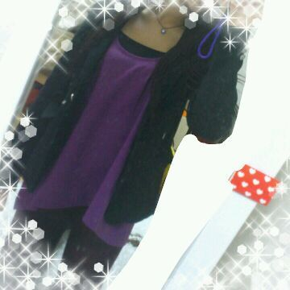

| 2012/06 08 Fri | 川村真洋 選抜総選挙★質問返し☆ろってぃ ー |
ほ〜い・ε・
ろってぃーでぇす♪
みなさん、
元気でありますかー?^^
最近よく、メンバーに
『ろってぃー♪の眉毛キレイ〜,』
って言っていわれて
嬉しい気持ちの
まひろです*・ω・*
・・・
AKB48さんの総選挙が
水曜日にあって、
２日が経ちました♪
まひろもずっとTVの前で
スタンバイしてました。
みんながすごい
不安でいっぱいな表情を
していて、
まひろもドキドキしてました(´`)
１人１人のコメントを
ちゃんと聞きました。
みんな、それぞれ
色んな感情と戦ってきている。
と感じました。
よしっ!!!
まひろも もっともっと
頑張らないとっ★☆★・ω・´
にっ=・ω・=
うん、ぢゃあ
質問返しやーーー=・ω・=!!
★個人PVのデートの時の
服は私服?
☆私服です*・ω・*

★紅茶ってぃーは映画で
泣いたりする?
☆最近はほとんどの映画で
泣いてしまう様になってもた・ω・`
★バイオハザードって
何まであんの?
☆4)))!
★ストリーミングラジオって
どうやって聞くの?
☆乃木坂46の公式ホームページ
を開いて、動画のところを
ポチっとしていただくと
きけまする〜*・∀・*
★宇宙兄弟みた？
☆見ました^^
笑うとこもあれば
感動するところもありました♪
ハッピーエンドで終わって
よかったです・ω・`
★ひらかたパーク
行ったことある?
☆小学生の頃、
家族と行きました=・ω・=
★miwa知ってる?
☆知ってます*^ω^*
声かわいい♪
★今めっちゃ聞いてる曲ある?
☆聞いてるとゆうか
よく口ずさんぢゃうのは
西野カナさんの新曲♪『私たち』
^^
★4キロ落とすのに
どんくらいかかった?
☆3カ月・ε・♪
★ろってぃーを一押しに
していい?
☆嬉しいっ〃ω〃
こんな者でもよければ
よろしくお願いします´・ω・`♪
★乃木坂でユニット組むなら
どんな感じがいいかなぁ？
☆かっこよくてパンチのある
ユニット♪がいいです`・ω
★ろってぃーは帽子
何個もってんの?
☆15個ω))
★部活引退したら、
握手会とかでナルト語ろうね♪
待っててくれるかな?
☆うんっ*・∀・*
まっとくから来てねっ〃ω〃
★ろってぃー
『好きな紅茶は、レモンティー,
ミルクティー,アップルティー。
みんなが好きな紅茶はぁ?』
ファン
『まひろってぃーー☆』
ってのはどう?
☆すごいいいっ*・∀・*
めっちゃいいんだけど、
やんのに勇気がいる〜〃ω〃笑
以上っ)))♪
ろってぃーでしたっ^ω^
のし。